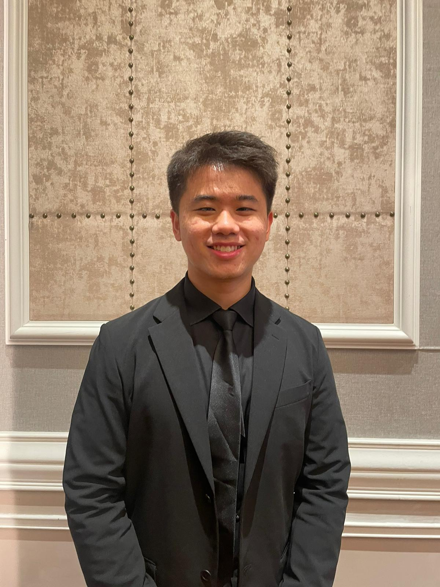

Building the future through Data and Mathematics
A penultimate-year student passionate about quantitative finance, data, and machine learning through building scalable technology solutions that make a real impact.
A bit about myself

Driven by curiosity, powered by data
I am Allen Lu Zhao Quan, a penultimate-year student at Nanyang Technological University majoring in Data Science and Artificial Intelligence. My journey into technology and quantitative analysis began from a conversation with my senior about the field, who helped me realised my math background was not separated from finance and consequently, this reframed everything, helping me to discovered the elegance of mathematical models in predicting real-world phenomena.
My aspiration is to work at the intersection of data and finance, whether that's researching trading algorithms at a quantitative hedge fund, building scalable systems at a leading tech company, or creating innovative solutions that bridge both worlds.
When I am not coding or crunching numbers, I love to read, play poker, gym, and make money.
Technical Arsenal
Languages
- Python (Proficient)
- SQL (Proficient)
- R (Proficient)
- C (Intermediate)
- C++ (Developing)
- Java (Developing)
- JavaScript (Developing)
Quant & Data
- NumPy / Pandas
- Statistical Modeling
- Machine Learning
- Time Series Analysis
- Risk Management
- Backtesting
Tools & Frameworks
- Tableau
- Snowflake
- Git / GitHub
- Docker
- AWS
- PyTorch
- React / Node.js
- PostgreSQL / Supabase
Portfolio
Internships
Intern, Quantitative Analyst @ PhillipCapital (IFS Capital)
Enhanced current GLM pricing model (Poisson/Gamma) to quantify rating factor relativities for private motor portfolios, exploring alternative models including Tweedie and GAM, Tweedie model achieved a Gini gain of 0.126, outperforming baseline model
Designed Monte Carlo simulations to model stochastic claim outcomes for 9,253 motor insurance policies under a Tweedie GLM framework, identifying 99th-percentile loss ratio ~4.54% above expected levels, quantifying portfolio tail risk
Developed SQL pipelines in Snowflake to compute borrower-level credit metrics (utilisation ratios, working-capital exposure, investment limits) and implemented rule-based classification to surface eligibility signals via Tableau dashboards for loan decisioning
Intern, Strategy & Business Intelligence Analyst @ Adroit Investment Technologies
Researched on emerging AI technologies across various sectors and prepared teasers, industry outlook, statistical reports for prospective clients, achieving 33% increase in client acquisition for the Month of May
Managed components of financial statements using Power BI including Capital Accounts, Capital Calls, Capital Distribution
Operated across a full stack of a Learning Management System (LMS) for a children's learning school using Odoo platform, including UI/UX adjustments, business logic workflows, data model configurations. Design shortlisted by CEO to be used as pitching material
Implemented Excel algorithms to clean and compare 2,000 entries of investment data, enabling strategic report generation and stakeholder-ready insights
Prepared internal and external investor decks akin to M&A pitchbooks, integrating macroeconomic trends (e.g. US tariffs, air cargo rates) with company performance
Intern, Data Analytics & Management @ SCAL Academy
Managed and cleaned entries of 1,900 trainees from the Month of April to July 2024 using Excel VBA for generation of certificates
Developed an automated data entry system optimising mass certificate generation process, resulting in 75% reduction in manhours
Coordinated Ad-hoc tele calling from clients and trainees, ensuring all disputes and queries were addressed in time and reduced callback rate by 50%
Intern, Actuary @ AIA (Grinweiv)
Devised key presentations for insurance companies, namely DirectAsia and Allied World Assurance regarding Customer Acquisition and Financial Modelling, resulting in a projected 20% increase in client count in coming 1-3 years, won overall best ideation
Analysed option-based policy payoff structures (Call, Put, Straddle, Butterfly, Condor) to understand hedging mechanics in insurance product design
Appointed to be weekly Team Lead and managed a team of 6 in administrative matters, collate and report feedback regarding training and well-being to supervisor
Intern, Systems Engineer @ Defence Science and Technology Agency
Utilised visual tools to construct Command Center Dashboards for a Just-in-Time Data Switchboard used during threat and crisis management, Dashboard enhancements approved by Head of Technology for implementation
Devised a presentation of a prototype of the dashboard created, dissecting strengths and weaknesses for improvements in future development
Featured Projects
CAPM Portfolio Optimiser
Built an end-to-end quantitative portfolio optimisation engine from scratch using live market data from Yahoo Finance. Estimated per-stock alpha and beta via OLS regression, then applied CAPM-implied expected returns as inputs to three optimisation strategies: Maximum Sharpe Ratio, Minimum Variance, and Equal-Weight; all solved via SciPy's SLSQP solver. Constructed the full Markowitz Efficient Frontier and backtested all three strategies against cumulative $1,000 growth
Deep Learning for Dense Video Captioning
Implemented the Vid2Seq framework, a visual-language model that jointly localises and describes events in untrimmed video using CLIP-based visual extraction and a T5 sequence-to-sequence backbone. Responsible for implementing METEOR and CIDEr evaluation metrics from scratch and conducting ablation experiments across three CLIP encoders and T5 model sizes. Pretraining improved CIDEr from 59.62% to 70.05%, exceeding author-reported benchmarks
Wealth Wellness Hub
Full-stack wealth management platform built in response to a real Schroders problem statement, unifying traditional and digital assets into a single dashboard. Engineered a financial wellness scoring engine with LLM-powered insights via Groq's llama3-8b. Shipped scenario simulation, AI coach chat, Stripe subscription tiers, automated multilingual email reports, and full i18n across 5 languages; containerised with Docker
Project REACH Donation Dashboard
Full-stack donor engagement platform built in 4 days for a Hong Kong non-profit serving 230,000 underprivileged children, targeting a ~70% donor dropout rate. Led ideation and owned the AI-generated badge system and real-time donation leaderboard. Also shipped an automated campaign newsletter system. Built on Vue.js, Tailwind CSS, Flask, Supabase, Stripe, and Resend
Independent Equity Research: Trip.com Group (SEHK:9961)
Initiated coverage of Trip.com (SEHK: 9961) with a BUY recommendation and CNY 492 price target (+10.3% upside). Built a full financial model across income statement, balance sheet, cash flow, and DCF valuation over FY25–29E. Valuation anchored on 11.5x terminal EBITDA and 7.5% WACC; supported by Porter's Five Forces, peer multiples benchmarking, and sensitivity analysis
View Report →Selected Competitions
FinTech Innovators Hackathon 2026 — NTU NFC × Schroders
One of 2 problem statements selected by Schroders' Digital Assets & Operations Innovation teams. Built and pitched a full-stack financial wellness platform within a 7-day seeding window. Obtained Honourable Mention (Top 8 out of 90+ Teams)
Morgan Stanley CodeToGive Asia Hackathon 2025
Selectively chosen to represent NTU in a cross-university hackathon organised by Morgan Stanley, competing against 10–20 teams across Hong Kong and Singapore. Teams were tasked with building a technology solution for a real non-profit within 4 days, where our team was assigned Project REACH, an education equity charity serving underprivileged children in Hong Kong. Obtained Top 4 out of 20+ Teams
The Turing Laboratory
Helping students excel in English, Mathematics & Sciences
Beyond my academic pursuits, I run a private tutoring service providing one-to-one home tuition. This venture has sharpened my ability to break down complex concepts, adapt to different learning styles, and build meaningful mentor-student relationships.
Teaching has taught me that true understanding comes from being able to explain something simply; a principle I apply to every technical challenge I face.
Let us build something together
I am actively seeking opportunities in quantitative research, data science and machine learning. Whether you have a role in mind, want to discuss a project, or just want to connect; my inbox is always open.